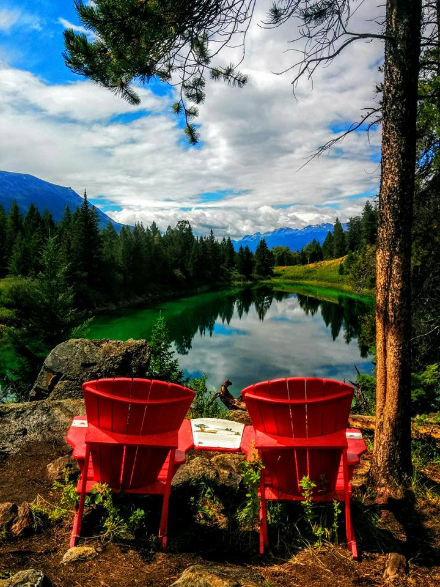

<div class="content">



<div class="textbox-front" style="float:left; white-space: normal;">
  <h2 class="section-head">present</h2>
  <div class="section-text">
    <p>
    Assistant Professor
    <br> 
    <a href="https://www.si.umich.edu/">School of Information</a>, <a href="https://umich.edu/">University of Michigan</a>
    <!-- <br> -->
<!--     <strong>Currently on the job market: <a href="/papers/cv.pdf" target="_blank">CV</a>, <a href="/papers/research-statement.pdf" target="_blank">research statement</a></strong> -->
    </p>
  </div>
  <!-- <h2 class="section-head">future</h2> -->
  
  <h2 class="section-head">past</h2>
  <div class="section-text">
    <p>
    PhD student, <a href="http://infosci.cornell.edu/" target="_blank">Information Science</a>, <a href="http://www.cornell.edu/" target="_blank">Cornell University</a>
    <br>
    Advised by <a href="http://www.cs.cornell.edu/~cristian/" target="_blank">Cristian Danescu-Niculescu-Mizil</a>
    <br>
    Graduated August 2021 <a href=/papers/phd-thesis.pdf>[dissertation]</a>
    <br><br>
    Postdoctoral Researcher, <a href="https://cs.stanford.edu/" target="_blank">Computer Science</a>, <a href="http://stanford.edu/" target="_blank">Stanford University</a>
    <br>
    Working with <a href="https://web.stanford.edu/~jurafsky/" target="_blank">Dan Jurafsky</a> and <a href="https://web.stanford.edu/~eberhard/about-jennifer-eberhardt.html" target="_blank">Jennifer Eberhardt</a>    
    <br><br>
    Recipient, <a href="https://www.microsoft.com/en-us/research/academic-program/phd-fellowship-program/" target="_blank">Microsoft PhD Fellowship</a> (2018-2020)<br>
    Intern, <a href="https://www.microsoft.com/en-us/research/group/information-and-data-sciences/" target="_blank">Microsoft</a> <a href="https://www.microsoft.com/en-us/research/group/adaptive-systems-and-interaction/" target="_blank">Research</a> (2019) <br>
    Intern, <a href="https://research.fb.com/category/data-science/" target="_blank">Facebook Core Data Science</a> (2017)<br>
    Intern, <a href="https://www.mpi-sws.org/" target="_blank">Max Planck Institute for Software Systems</a> (2014)<br>
    BS Computer Science, <a href="http://stanford.edu/" target="_blank">Stanford University</a> (2011-2015)
    <br></p>
  </div>
  <h2 class="section-head">principal components</h2>
  <div class="section-text">
    <p>natural language processing
      <br>
    computational social science</p>
  </div>

</div>
  <!-- <h1 class="page-heading">Posts</h1>

  <ul class="post-list">
    {% for post in site.posts %}
      <li>
        <span class="post-meta">{{ post.date | date: "%b %-d, %Y" }}</span>

        <h2>
          <a class="post-link" href="{{ post.url | prepend: site.baseurl }}">{{ post.title }}</a>
        </h2>
      </li>
    {% endfor %}
  </ul>

  <p class="rss-subscribe">subscribe <a href="{{ "/feed.xml" | prepend: site.baseurl }}">via RSS</a></p> -->

</div>
